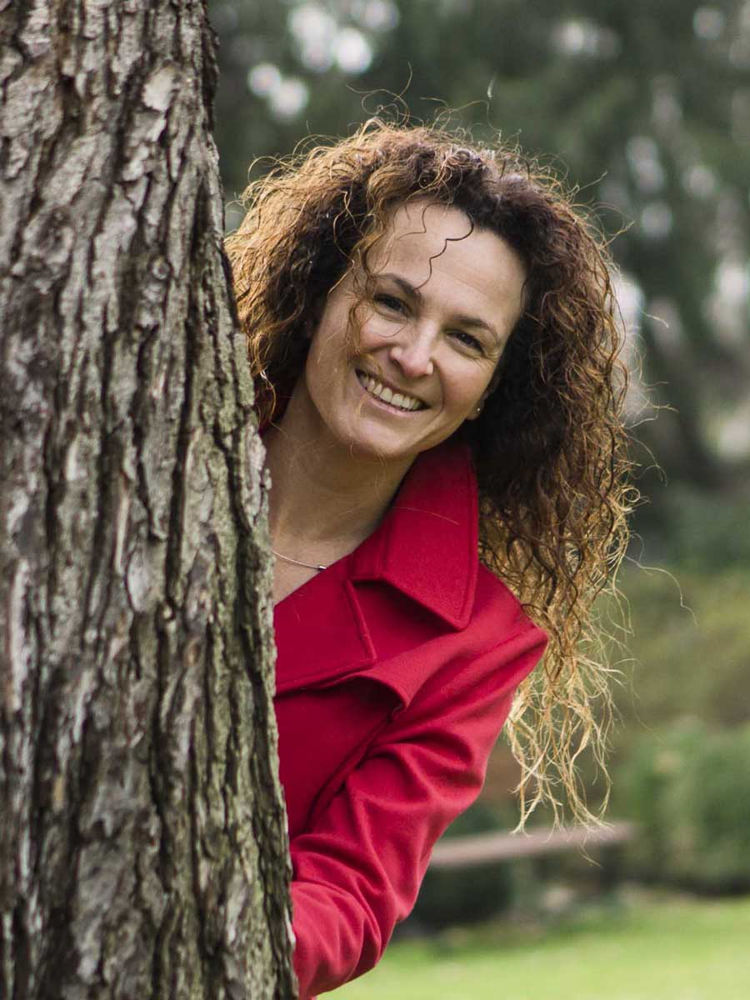

O knize
Knížka “Sladké sny, houpy hou” je doplňkem pro spánkový rituál.
Rýmovaná ukolébavka, jejíž každý řádek doprovázejí dvoustránkové
modrobílé ilustrace, využívá prvky meditace. Popisuje, co kolem
sebe dětí vidí, slyší a co mohou cítit a pociťovat.
Ilustrace jako ve snu přinášejí spíše klid než rozptýlení a jsou
vedené od tmavé do světle modré, aby pomohly překonat případný strach ze tmy.
Co vám knížka přinese?
-
Oblíbené dětské motivy, jako jsou měsíc, hvězdy, pes, kočka nebo bublinky, využijete
například při učení znakové řeči pro batolata.
-
Společné čtení knížky upevní vaše pouto s dítětem.
-
Text je snadno zapamatovatelný a díky ilustracím si
děti mohou knížku následně „číst“ i samy, a to přispívá k podpoře jejich sebeúcty.
Knihu napsala Lenka Bergmann Míkovcová původně v angličtině, do češtiny ji
přebásnila Alice Škochová a ilustrace jsou dílem Věry Emy Tataro. Vydavatelem
je Pointa.
Facebook knihy zde.

Autorka
Lenka Bergmann Míkovcová
Lenka pracuje jako asistentka pedagoga v mezinárodní montessori školce a ráda píše a knižně vydává příběhy,
které dětem přinášejí radost, znalost a zjednodušení světa kolem nás.
Napsala a spoluvydala příběh o slůněti Babůovi, s vydavatelstvím Pointa vydala v roce 2019 další knížku -
ilustrovanou ukolébavku Sladké sny, houpy hou . Být rodičem a najít svůj styl ji
přivedlo k založení webu www.nohamavzhuru.cz. Psaní fejetonů o její cestě k respektu a empatii pro ni bylo časem,
kdy se učila a ujasňovala si myšlenky. Ty sdílela na webu a doufala, že tak bude inspirovat ostatní rodiče, jít vlastní
cestou a odolat zažitým konvencím. Se svým manželem absolvovala kurz Respektovat a být respektován u Taťjany a Pavla Kopřivových.
Po té absolvovala kurz Nenásilné komunikace. Za své rodičovské nej knížky považuje “Between Parent and Child” od Dr. Haim Ginotta.
Její pohled na život ovlivnila její rodina, studium ekonomie v Praze i Kalifornii, práce pro veřejný i neziskový sektor a systemicky
založené semináře. Důležité místo má v jejím životě i čas v přírodě, tvůrčí činnosti, zpívání, jóga a pes Charlie.
Spoluvydavatelka
Petra Marková
Petra Marková, spoluvydavatelka knížky, oslovila Lenku na kurzech Respektovat a být respektován.
Obě jsme měli chuť vytvořit knížku pro děti, která by byla v souladu s principy respektu a empatie k dětem.
Brzy na to napsala Lenka příběh o slůněti Babůovi a i s Petrou se pustili do práce na vydání knížky.
Petra se dnes věnuje pedagogice a učí na Montessori škole v Trutnově https://www.montessoritrutnov.cz
Muzikantka
Dana Houdková
Muzikantka Dana Houdková (www. kurzy-zpívání.cz), složila k příběhu písničku. Několik vteřin po přečtení příběhu Dana zazpívala:
“Když půl tak půl. Nejsem kráva ani vůl, jsem slon srdce jak zvon, břicho jak chrám.
Co já do něj dám?” Do 14 dnů byla písnička na světě i s hudbou. Písničku Dana nazpívala s našimi dětmi.
Ilustrátor
Rudolf Doulík
Rudolf Doulík vtiskl všem zvířátkům tvář. Připravil ilustrace, které dětem příběh vyprávějí samy i bez textu.
A to se dětem do sedmi let rozhodně hodí. Jeho múza byla trpělivá a se smyslem pro detail.
Kateřina Vašková
Všechny stránky knížky jsme ve spolupráci s kamarádkou Katkou doplnily větami, které příběh rozvíjí a motivují čtenáře, aby si s příběhem hráli.
Aby popřemýšleli o zvucích džungle, o tom, co je půl, jak se plazí housenka nebo co znamená, když je někdo veselý či smutný.
Petra Cicáková, Milan Žďárský a Jiří Vyšohlíd
Namluvení příběhu na CD se ujali členové divadelního souboru DRAK z Hradce Králové.